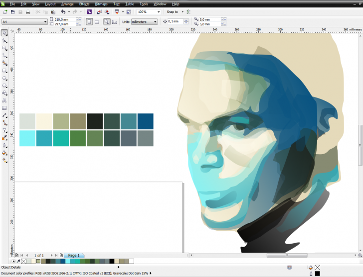

ВОПРОС / ОТВЕТ ДЛЯ НАЧИНАЮЩИХ
polzovatel-902 / 13.07.2010, 09:21/00:41
Форум:
Объясню на примере, чтоб было понятней... Открываю в кореле картинку (футболку с надписью) в формате JPG, мне нужно вытянуть из футболки надпись, т.е разъеденить файл... Говорят нужно формат изменить, еще что-то... Объясните, пожалуйста, что нужно сделать для этого...? Заранее спасибо.
Спасибо за советы. Разобрался САМ. А в задротном государстве мне лицензию покупать западло.
Ок. Давай, до свидания :D
Ставил пробную версию X6 ,возник вопрос :
В Панели инструмента Контура постоянно сбрасывались значения до дефолтных (шаги контура ,размер смещения) например после отмены действия , что было крайне неудобно ( этого не было в 12м например в котором я работаю) приходилось по новой все вводить.
Вопрос : после выхода обновлений так же осталось ? Может это можно как то изменить ?
FCSD, у меня не сбрасываются (sp2 + hf1).
В отличии от 12го Корела - в 15й и 16й версиях даже маленький документ открывается около 18 секунд
( при этом просто пустой Корел (без файла) открывается секунды четыре) . Можно как то сократить время загрузки - по работе нужно часто открывать файлы , и долгая загрузка раздражает сильно.
PS цв. стили отключены , в Касперском отключена проверка процессов Корела.
PPS добавлю что получается дурацкая ситуация : можно открыть пустой Корел за 4-5 сек а потом мгновенно любой файл. Получается быстрее но абсолютно через ж...
FCSD, согласен, что с запущенной программой, Corel загружает мгновенно любые файлы (у меня 2 секунды). Но так как Вы пишите, что открываете его очень часто, в чем проблема загрузить Corel и оставить его "висеть" в процессах? Насчет раздражения от 18 секунд запуска.. К примеру фотоЖоп без всяких файлов загружается все 30 секунд, а иногда и по минуте, поэтому смотря с чем сравнить :)
По поводу пробной версии - у меня в своё время (когда был анонс новой версии) настройки не сбрасывались.
Я тут продолжаю сравнивать 12й и 15й версии , возник вопрос по форматированию текста :
по сравнению с 12м исчезли стандартные окошки положения текста относительно пути (по вертикали и гор-тали) , ну нашел вроде их в настройках ,перетащил на панель инструментов , но при редактировании ничего не происходит . При попытке выровнять положение из окна "форматирование абзаца" так же не получается - там эти значения просто не активны , хотя текст выделен. Почему ?
FCSD,
потому что
в первом окне настроки относятся к параграф тексту
а во втором окне к тексту размерных линий
вы же пытаетесь "рулить" текстом по кривой ...
вот вам для "затравки"
Как создать свою палитру в Х4? Для прорисовки портрета она необходима
ector, я ВСЕГДА делаю так

ибо стилями мне пользоваться не удобно по сотне причин (включая главную - они "отъедают" часть экрана) Этот способ подходит для всех версий CorelDRAW
Страницы